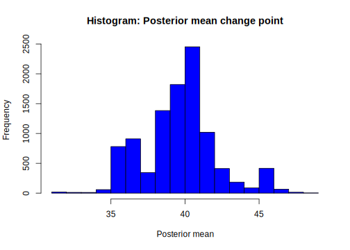
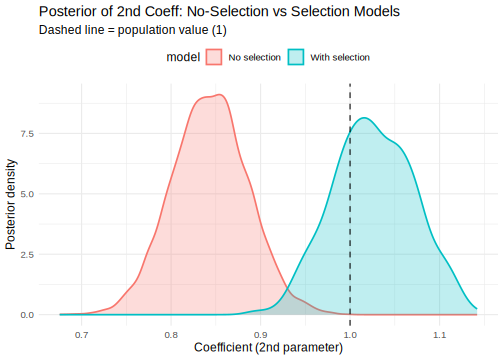

4.1 Markov Chain Monte Carlo methods
Markov Chain Monte Carlo (MCMC) methods are algorithms used to approximate complex probability distributions by constructing a Markov chain. This chain is a sequence of random samples where each sample depends only on the previous one. The goal of MCMC methods is to obtain draws from the posterior distribution as the equilibrium distribution. The key point in MCMC methods is the transition kernel or density, \(q(\boldsymbol{\theta}^{(s)}\mid \boldsymbol{\theta}^{(s-1)})\), which generates a draw \(\boldsymbol{\theta}^{(s)}\) at stage \(s\) that depends solely on \(\boldsymbol{\theta}^{(s-1)}\). This transition distribution must be designed such that the Markov chain converges to a unique stationary distribution, which, in our case, is the posterior distribution, that is,
\[ \pi(\boldsymbol{\theta}^{(s)}\mid \boldsymbol{y})=\int_{\boldsymbol{\Theta}}q(\boldsymbol{\theta}^{(s)}\mid \boldsymbol{\theta}^{(s-1)})\pi(\boldsymbol{\theta}^{(s-1)}\mid \boldsymbol{y})d\boldsymbol{\theta}^{(s-1)}. \]
Given that we start at an arbitrary point, \(\boldsymbol{\theta}^{(0)}\), the algorithm requires that the Markov chain be irreducible, meaning that the process can reach any other state with positive probability. Additionally, the process must be aperiodic, meaning that for each state, the greatest common divisor of the number of steps it takes to return to the state is 1, ensuring that there are no cycles forcing the system to return to a state only after a fixed number of steps. Furthermore, the process must be recurrent, meaning that it will return to any state an infinite number of times with probability one. However, to ensure convergence to the stationary distribution, a stronger condition is required: the process must be positive recurrent, meaning that the expected return time to a state is finite. Given an irreducible, aperiodic, and positive recurrent transition density, the Markov chain algorithm will asymptotically converge to the stationary posterior distribution we are seeking. For more details, see Christian P. Robert and Casella (2011).
4.1.1 Gibbs sampler
The Gibbs sampler algorithm is one of the most widely used MCMC methods for sampling from non-standard distributions in Bayesian analysis. While it is a special case of the Metropolis-Hastings (MH) algorithm, it originated from a different theoretical background (Geman and Geman 1984; A. E. Gelfand and Smith 1990). The key requirement for implementing the Gibbs sampling algorithm is the availability of conditional posterior distributions. The algorithm works by cycling through the conditional posterior distributions corresponding to different blocks of the parameter space under inference.
To simplify concepts, let’s focus on a parameter space composed of two blocks, \(\boldsymbol{\theta} = [\boldsymbol{\theta}_1 \ \boldsymbol{\theta}_2]^{\top}\). The Gibbs sampling algorithm uses the transition kernel
\[ q(\boldsymbol{\theta}_1^{(s)},\boldsymbol{\theta}_2^{(s)}\mid \boldsymbol{\theta}_1^{(s-1)},\boldsymbol{\theta}_2^{(s-1)})=\pi(\boldsymbol{\theta}_1^{(s)}\mid \boldsymbol{\theta}_2^{(s-1)},\boldsymbol{y})\pi(\boldsymbol{\theta}_2^{(s)}\mid \boldsymbol{\theta}_1^{(s)},\boldsymbol{y}). \]
Thus,
\[ \begin{aligned} \int_{\boldsymbol{\Theta}}q(\boldsymbol{\theta}^{(s)}\mid \boldsymbol{\theta}^{(s-1)})\pi(\boldsymbol{\theta}^{(s-1)}\mid \boldsymbol{y})d\boldsymbol{\theta}^{(s-1)} &=\int_{\boldsymbol{\Theta}_2}\int_{\boldsymbol{\Theta}_1}\pi(\boldsymbol{\theta}_1^{(s)}\mid \boldsymbol{\theta}_2^{(s-1)},\boldsymbol{y})\pi(\boldsymbol{\theta}_2^{(s)}\mid \boldsymbol{\theta}_1^{(s)},\boldsymbol{y})\pi(\boldsymbol{\theta}^{(s-1)}_1,\boldsymbol{\theta}^{(s-1)}_2\mid \boldsymbol{y})d\boldsymbol{\theta}^{(s-1)}_1d\boldsymbol{\theta}^{(s-1)}_2\\ &=\pi(\boldsymbol{\theta}_2^{(s)}\mid \boldsymbol{\theta}_1^{(s)},\boldsymbol{y})\int_{\boldsymbol{\Theta}_2}\int_{\boldsymbol{\Theta}_1}\pi(\boldsymbol{\theta}_1^{(s)}\mid \boldsymbol{\theta}_2^{(s-1)},\boldsymbol{y})\pi(\boldsymbol{\theta}^{(s-1)}_1,\boldsymbol{\theta}^{(s-1)}_2\mid \boldsymbol{y})d\boldsymbol{\theta}^{(s-1)}_1d\boldsymbol{\theta}^{(s-1)}_2\\ &=\pi(\boldsymbol{\theta}_2^{(s)}\mid \boldsymbol{\theta}_1^{(s)},\boldsymbol{y})\int_{\boldsymbol{\Theta}_2}\pi(\boldsymbol{\theta}_1^{(s)}\mid \boldsymbol{\theta}_2^{(s-1)},\boldsymbol{y})\pi(\boldsymbol{\theta}^{(s-1)}_2\mid \boldsymbol{y})d\boldsymbol{\theta}^{(s-1)}_2\\ &=\pi(\boldsymbol{\theta}_2^{(s)}\mid \boldsymbol{\theta}_1^{(s)},\boldsymbol{y})\int_{\boldsymbol{\Theta}_2}\pi(\boldsymbol{\theta}_1^{(s)},\boldsymbol{\theta}_2^{(s-1)}\mid \boldsymbol{y})d\boldsymbol{\theta}^{(s-1)}_2\\ &=\pi(\boldsymbol{\theta}_2^{(s)}\mid \boldsymbol{\theta}_1^{(s)},\boldsymbol{y})\pi(\boldsymbol{\theta}_1^{(s)}\mid \boldsymbol{y})\\ &=\pi(\boldsymbol{\theta}_1^{(s)},\boldsymbol{\theta}_2^{(s)}\mid \boldsymbol{y}). \end{aligned} \]
Then, \(\pi(\boldsymbol{\theta}\mid \boldsymbol{y})\) is the stationary distribution for the Gibbs transition kernel.
A word of caution! Even if we have well-defined conditional posterior distributions \(\pi(\boldsymbol{\theta}_1^{(s)} \mid \boldsymbol{\theta}_2^{(s-1)}, \boldsymbol{y})\) and \(\pi(\boldsymbol{\theta}_2^{(s)} \mid \boldsymbol{\theta}_1^{(s)}, \boldsymbol{y})\), and we can simulate from them, the joint posterior distribution \(\pi(\boldsymbol{\theta}_1^{(s)}, \boldsymbol{\theta}_2^{(s)} \mid \boldsymbol{y})\) may not correspond to any proper distribution. We should be mindful of this situation, especially when dealing with improper prior distributions (see Christian P. Robert and Casella (2011) for details).
Algorithm 1 demonstrates the implementation of a Gibbs sampler with \(d\) blocks. The number of iterations (\(S\)) is chosen to ensure convergence to the stationary distribution. In Section 4.4, we review several convergence diagnostics to assess whether the posterior draws have reached convergence.
Set θ2(0), θ3(0), ..., θd(0), For s=1,2,...,S do Draw θ1(s) from π(θ1(s)|θ2(s-1),...,θd(s-1),y) Draw θ2(s) from π(θ2(s)|θ1(s),...,θd(s-1),y) ... Draw θd(s) from π(θd(s)|θ1(s),...,θd-1(s),y) End for
Example: Mining disaster change point
Let’s use the dataset Mining.csv provided by Carlin, Gelfand, and Smith (1992). This dataset records the number of mining disasters per year from 1851 to 1962 in British coal mines.
We assume there is an unknown structural change point in the number of mining disasters, where the parameters of the Poisson distributions change. In particular:
\[ \begin{align*} p(y_t) = \begin{cases} \frac{\exp(-\lambda_1) \lambda_1^{y_t}}{y_t!}, & t = 1, 2, \dots, H \\ \frac{\exp(-\lambda_2) \lambda_2^{y_t}}{y_t!}, & t = H+1, \dots, T \end{cases} \end{align*} \]
where \(H\) is the changing point.
We use conjugate families for \(\lambda_l\), \(l = 1, 2\), where \(\lambda_l \sim G(\alpha_{l0}, \beta_{l0})\), and set \(\pi(H) = 1 / T\), which corresponds to a discrete uniform distribution for the change point. This implies that, a priori, we assume equal probability for any time to be the change point.
The posterior distribution is:
\[ \begin{align*} \pi(\lambda_1, \lambda_2, H \mid \mathbf{y}) &\propto \prod_{t=1}^{H} \frac{\exp(-\lambda_1) \lambda_1^{y_t}}{y_t!} \prod_{t=H+1}^{T} \frac{\exp(-\lambda_2) \lambda_2^{y_t}}{y_t!} \\ &\times \exp(-\beta_{10} \lambda_1) \lambda_1^{\alpha_{10}-1} \exp(-\beta_{20} \lambda_2) \lambda_2^{\alpha_{20}-1} \frac{1}{T} \\ &\propto \exp(-H \lambda_1) \lambda_1^{\sum_{t=1}^{H} y_t} \exp(-(T-H) \lambda_2) \lambda_2^{\sum_{t=H+1}^{T} y_t} \\ &\times \exp(-\beta_{10} \lambda_1) \lambda_1^{\alpha_{10}-1} \exp(-\beta_{20} \lambda_2) \lambda_2^{\alpha_{20}-1} \end{align*} \]
Then, the conditional posterior distribution of \(\lambda_1 \mid \lambda_2, H, \mathbf{y}\) is:
\[ \begin{align*} \pi(\lambda_1 \mid \lambda_2, H, \mathbf{y}) &\propto \exp(-(H + \beta_{10}) \lambda_1) \lambda_1^{\sum_{t=1}^{H} y_t + \alpha_{10} - 1} \end{align*} \]
That is, \(\lambda_1 \mid \lambda_2, H, \mathbf{y} \sim G(\alpha_{1n}, \beta_{1n})\), \(\beta_{1n} = H + \beta_{10}\) and \(\alpha_{1n} = \sum_{t=1}^{H} y_t + \alpha_{10}\).
The conditional posterior distribution of \(\lambda_2\mid \lambda_1,H,y\) is
\[\begin{align*} \pi(\lambda_2\mid \lambda_1,H,y)&\propto\exp(-((T-H)+\beta_{20})\lambda_2)\lambda_2^{\sum_{t=H+1}^T y_t+\alpha_{20}-1}, \end{align*}\]that is, \(\lambda_2\mid \lambda_1,H,y\sim G(\alpha_{2n},\beta_{2n})\), \(\beta_{2n}=(T-H)+\beta_{20}\) and \(\alpha_{2n}=\sum_{t=H+1}^T y_t+\alpha_{20}\).
The conditional posterior distribution of the change point is
\[\begin{align*} \pi(H\mid \lambda_1,\lambda_2,y)&\propto\exp(-H\lambda_1)\lambda_1^{\sum_{t=1}^H y_t}\exp(-(T-H)\lambda_2)\lambda_2^{\sum_{t=H+1}^T y_t}\\ &\propto \exp(-H(\lambda_1-\lambda_2))\lambda_1^{\sum_{t=1}^H y_t}\lambda_2^{\sum_{t=H+1}^T y_t} \exp(-T\lambda_2) \frac{\lambda_2^{\sum_{t=1}^H}}{\lambda_2^{\sum_{t=1}^H} y_t}\\ &\propto \exp(-H(\lambda_1-\lambda_2))\left(\frac{\lambda_1}{\lambda_2}\right)^{\sum_{t=1}^H y_t}. \end{align*}\]Thus, the conditional posterior distribution of \(H\) is
\[\begin{align*} \pi(H\mid \lambda_1,\lambda_2,y)=& \frac{\exp(-H(\lambda_1-\lambda_2))\left(\frac{\lambda_1}{\lambda_2}\right)^{\sum_{t=1}^H y_t}}{\sum_{H=1}^T \exp(-H(\lambda_1-\lambda_2))\left(\frac{\lambda_1}{\lambda_2}\right)^{\sum_{t=1}^H y_t}}, & H=1,2,\dots,T. \end{align*}\]The following code shows how to do a Gibbs sampling algorithm to perform inference of this model using the hyperparameters suggested by Greenberg (2012), \(\alpha_{l0}=0.5\) and \(\beta_{l0}=1\), \(l=1,2\).
rm(list = ls()); set.seed(010101)
dataset<-read.csv("https://raw.githubusercontent.com/besmarter/BSTApp/refs/heads/master/DataApp/MiningDataCarlin.csv",header=T)
attach(dataset); str(dataset)## 'data.frame': 112 obs. of 2 variables:
## $ year : int 1851 1852 1853 1854 1855 1856 1857 1858 1859 1860 ...
## $ Count: int 4 5 4 1 0 4 3 4 0 6 ...a10<-0.5; a20<-0.5
b10<-1; b20<-1
y<-Count
sumy<-sum(Count); N<-length(Count)
theta1<-NULL; theta2<-NULL
kk<-NULL; k<-60; S<-10000
for(i in 1:S){
a1<-a10+sum(y[1:k]); b1<-b10+k
theta11<-rgamma(1,a1,b1)
theta1<-c(theta1,theta11)
a2<-a20+sum(y[(1+k):N]); b2<-b20+N-k
theta22<-rgamma(1,a2,b2)
theta2<-c(theta2,theta22)
pp<-NULL
for(l in 1:N){
p<-exp(l*(theta22-theta11))*(theta11/theta22)^(sum(y[1:l]))
pp<-c(pp,p)
}
prob<-pp/sum(pp); k<-sample(1:N,1,prob=prob)
kk<-c(kk,k)
}
library(coda); summary(mcmc(theta1)); summary(mcmc(theta2))##
## Iterations = 1:10000
## Thinning interval = 1
## Number of chains = 1
## Sample size per chain = 10000
##
## 1. Empirical mean and standard deviation for each variable,
## plus standard error of the mean:
##
## Mean SD Naive SE Time-series SE
## 3.051805 0.283456 0.002835 0.003054
##
## 2. Quantiles for each variable:
##
## 2.5% 25% 50% 75% 97.5%
## 2.513 2.856 3.046 3.237 3.632##
## Iterations = 1:10000
## Thinning interval = 1
## Number of chains = 1
## Sample size per chain = 10000
##
## 1. Empirical mean and standard deviation for each variable,
## plus standard error of the mean:
##
## Mean SD Naive SE Time-series SE
## 0.915383 0.117658 0.001177 0.001268
##
## 2. Quantiles for each variable:
##
## 2.5% 25% 50% 75% 97.5%
## 0.6996 0.8341 0.9117 0.9932 1.1570##
## Iterations = 1:10000
## Thinning interval = 1
## Number of chains = 1
## Sample size per chain = 10000
##
## 1. Empirical mean and standard deviation for each variable,
## plus standard error of the mean:
##
## Mean SD Naive SE Time-series SE
## 40.15020 2.48875 0.02489 0.02903
##
## 2. Quantiles for each variable:
##
## 2.5% 25% 50% 75% 97.5%
## 36 39 40 41 46hist(kk, main = "Histogram: Posterior mean change point", xlab = "Posterior mean", col = "blue", breaks = 25)
The posterior results indicate that the rate of disasters decrease from 3.1 to 0.92 per year in 1890.
The figure shows the histogram of the posterior draws of the change point in mining disasters.
4.1.2 Metropolis-Hastings
The Metropolis-Hastings (M-H) algorithm (Metropolis et al. 1953; Hastings 1970) is a general MCMC method that does not require standard closed-form solutions for the conditional posterior distributions. The key idea is to use a transition kernel whose unique invariant distribution is \(\pi(\boldsymbol{\theta} \mid \mathbf{y})\). This kernel must satisfy the balancing condition, meaning that, given a realization \(\boldsymbol{\theta}^{(s-1)}\) at stage \(s-1\) from the stationary distribution \(\pi(\boldsymbol{\theta} \mid \mathbf{y})\), we generate a candidate draw \(\boldsymbol{\theta}^{c}\) from the proposal distribution \(q(\boldsymbol{\theta}^{c} \mid \boldsymbol{\theta}^{(s-1)})\) at stage \(s\) such that:
\[ q(\boldsymbol{\theta}^{c} \mid \boldsymbol{\theta}^{(s-1)}) \pi(\boldsymbol{\theta}^{(s-1)} \mid \mathbf{y}) = q(\boldsymbol{\theta}^{(s-1)} \mid \boldsymbol{\theta}^{c}) \pi(\boldsymbol{\theta}^{c} \mid \mathbf{y}), \]
which implies that the probability of moving from \(\boldsymbol{\theta}^{(s-1)}\) to \(\boldsymbol{\theta}^{c}\) is equal to the probability of moving from \(\boldsymbol{\theta}^{c}\) to \(\boldsymbol{\theta}^{(s-1)}\).
In general, the balancing condition is not automatically satisfied, and we must introduce an acceptance probability \(\alpha(\boldsymbol{\theta}^{(s-1)}, \boldsymbol{\theta}^{c})\) to ensure that the condition holds:
\[ q(\boldsymbol{\theta}^{c} \mid \boldsymbol{\theta}^{(s-1)}) \pi(\boldsymbol{\theta}^{(s-1)} \mid \mathbf{y}) \alpha(\boldsymbol{\theta}^{(s-1)}, \boldsymbol{\theta}^{c}) = q(\boldsymbol{\theta}^{(s-1)} \mid \boldsymbol{\theta}^{c}) \pi(\boldsymbol{\theta}^{c} \mid \mathbf{y}). \]
Thus, the acceptance probability is given by:
\[ \alpha(\boldsymbol{\theta}^{(s-1)}, \boldsymbol{\theta}^{c}) = \min\left\{\frac{q(\boldsymbol{\theta}^{(s-1)} \mid \boldsymbol{\theta}^{c}) \pi(\boldsymbol{\theta}^{c} \mid \mathbf{y})}{q(\boldsymbol{\theta}^{c} \mid \boldsymbol{\theta}^{(s-1)}) \pi(\boldsymbol{\theta}^{(s-1)} \mid \mathbf{y})}, 1\right\}, \]
where \(q(\boldsymbol{\theta}^{c} \mid \boldsymbol{\theta}^{(s-1)})\) and \(\pi(\boldsymbol{\theta}^{(s-1)} \mid \mathbf{y})\) must be nonzero, as transitioning from \(\boldsymbol{\theta}^{(s-1)}\) to \(\boldsymbol{\theta}^{c}\) is only possible under these conditions.
Algorithm 2 shows how to implement a Metropolis-Hastings algorithm. The number of iterations (\(S\)) is chosen to ensure convergence to the stationary distribution.
Set θ(0) in the support of π(θ|y) For s=1,2,...,S do Draw θc from q(θc|θ(s-1)) Calculate α(θ(s-1),θc)=min((q(θ(s-1)|θc)π(θc|y))/(q(θc|θ(s-1))π(θ(s-1)|y)),1) Draw U from U(0,1) θ(s)= θc if U < α(θ(s-1),θc) θ(s)= θ(s-1) otherwise End for
Some remarks: First, we do not need to know the marginal likelihood to implement the M-H algorithm, as it cancels out when calculating the acceptance probability. Specifically, given that \(\pi(\boldsymbol{\theta} \mid \boldsymbol{y}) \propto \pi(\boldsymbol{\theta}) \times p(\boldsymbol{y} \mid \boldsymbol{\theta})\), we can use the right-hand side expression to compute the acceptance probability. Second, the Gibbs sampling algorithm is a particular case of the M-H algorithm where the acceptance probability is equal to 1 (Andrew Gelman and Rubin (1992) and Christian P. Robert and Casella (2011), see Exercise 2). Third, we can combine the M-H and Gibbs sampling algorithms when dealing with relatively complex posterior distributions. Specifically, the Gibbs sampling algorithm can be used for blocks with conditional posterior distributions in standard closed forms, while the M-H algorithm is applied to sample from conditional posterior distributions that do not have standard forms. This approach is known as the M-H within Gibbs sampling algorithm. Fourth, we can note that the transition kernel in the M-H algorithm is a mixture of a continuous density (\(q(\boldsymbol{\theta}^c \mid \boldsymbol{\theta}^{(s-1)})\)) and a probability mass function (\(\alpha(\boldsymbol{\theta}^{(s-1)}, \boldsymbol{\theta}^c)\)) Siddhartha Chib and Greenberg (1995).
Fifth, a crucial point associated with the proposal densities is the acceptance probability. Low or high acceptance probabilities are not ideal. A low rate implies poor mixing, meaning the chain does not move effectively through the support of the posterior distribution. Conversely, a high acceptance rate implies that the chain will converge too slowly. A sensible value depends on the dimension of the parameter space. A rule of thumb is that if the dimension is less than or equal to 2, the acceptance rate should be around 0.50. If the dimension is greater than 2, the acceptance rate should be approximately 0.25 Roberts, Gelman, and Gilks (1997). For technical details of the Metropolis-Hastings algorithm, see Christian P. Robert and Casella (2011), Chap. 7.
Regarding the proposal density, it must be positive everywhere the posterior distribution is positive. This ensures that the Markov chain can explore the entire support of the posterior distribution. Additionally, the proposal density must allow the Markov chain to reach any region of the posterior distribution’s support. There are three standard approaches for choosing the proposal density: the independent proposal, the random walk proposal, and the tailored proposal.
In the independent proposal, \(q(\boldsymbol{\theta}^c \mid \boldsymbol{\theta}^{(s-1)}) = q(\boldsymbol{\theta}^c)\), which implies that
\[ \alpha(\boldsymbol{\theta}^{(s-1)}, \boldsymbol{\theta}^c) = \min\left\{\frac{q(\boldsymbol{\theta}^{(s-1)}) \pi(\boldsymbol{\theta}^c \mid \boldsymbol{y})}{q(\boldsymbol{\theta}^c) \pi(\boldsymbol{\theta}^{(s-1)} \mid \boldsymbol{y})}, 1\right\}. \]
In this case, a move from \(\boldsymbol{\theta}^{(s-1)}\) to \(\boldsymbol{\theta}^c\) is always accepted if \(q(\boldsymbol{\theta}^{(s-1)}) \pi(\boldsymbol{\theta}^c \mid \boldsymbol{y}) \geq q(\boldsymbol{\theta}^c) \pi(\boldsymbol{\theta}^{(s-1)} \mid \boldsymbol{y})\).
In the random walk proposal, \(\boldsymbol{\theta}^c = \boldsymbol{\theta}^{(s-1)} + \boldsymbol{\epsilon}\), where \(\boldsymbol{\epsilon}\) is a random perturbation. If \(p(\boldsymbol{\epsilon}) = p(-\boldsymbol{\epsilon})\), meaning the distribution \(p(\boldsymbol{\epsilon})\) is symmetric around zero, then \(q(\boldsymbol{\theta}^c \mid \boldsymbol{\theta}^{(s-1)}) = q(\boldsymbol{\theta}^{(s-1)} \mid \boldsymbol{\theta}^c)\). This was the original Metropolis algorithm Metropolis et al. (1953). Thus, the acceptance rate is
\[ \alpha(\boldsymbol{\theta}^{(s-1)}, \boldsymbol{\theta}^c) = \min\left\{\frac{\pi(\boldsymbol{\theta}^c \mid \boldsymbol{y})}{\pi(\boldsymbol{\theta}^{(s-1)} \mid \boldsymbol{y})}, 1\right\}. \]
In this case, a move from \(\boldsymbol{\theta}^{(s-1)}\) to \(\boldsymbol{\theta}^c\) is always accepted if \(\pi(\boldsymbol{\theta}^c \mid \boldsymbol{y}) \geq \pi(\boldsymbol{\theta}^{(s-1)} \mid \boldsymbol{y})\).
In the tailored proposal, the density is designed to have fat tails, is centered at the mode of the posterior distribution, and its scale matrix is given by the negative inverse Hessian matrix evaluated at the mode. Specifically, for two blocks, the log posterior distribution is maximized with respect to \(\boldsymbol{\theta}_1\) given \(\boldsymbol{\theta}_2\). This process is repeated at each iteration of the algorithm because \(\boldsymbol{\theta}_2\) changes at different stages. As a result, the algorithm can be slow since the optimization process is computationally demanding (see Greenberg (2012), Chaps. 7 and 9 for examples).
A sensible recommendation when performing the M-H algorithm is to use a random walk proposal such that \(\boldsymbol{\epsilon} \sim N(\boldsymbol{0}, c^2 \boldsymbol{\Sigma})\), where \(\boldsymbol{\Sigma}\) is the negative inverse Hessian matrix evaluated at the mode, that is, maximize with respect to all parameters, and set \(c \approx 2.4 / \sqrt{\text{dim}(\boldsymbol{\theta})}\), which is the most efficient scale compared to independent sampling Andrew Gelman et al. (2021), Chap. 12. After some iterations of the algorithm, adjust the scale matrix \(\boldsymbol{\Sigma}\) as before, and increase or decrease \(c\) if the acceptance rate of the simulations is too high or low, respectively. The objective is to bring the acceptance rate to the stated rule of thumb: if the dimension is less than or equal to 2, the acceptance rate should be around 0.50, and if the dimension is greater than 2, the acceptance rate should be around 0.25. Once this is achieved, we should run the algorithm without modifications and use this part of the algorithm to perform inference.
Example: Ph.D. students sleeping hours continues
In the Ph.D. students sleeping hours exercise of Chapter 3 we get a posterior distribution that is Beta with parameters 16.55 and 39.57. We can sample from this posterior distribution using the function rbeta from R. However, we want to compare the performance of a M-H algorithm using as proposal density a \(U(0,1)\) distribution.
The following code shows how to do a M-H algorithm to sample from the beta distribution using the uniform distribution.
rm(list = ls()); set.seed(010101)
an <- 16.55; bn <- 39.57
S <- 100000; p <- runif(S); accept <- rep(0, S)
for (s in 2:S){
pc <- runif(1) # Candidate
a <- dbeta(pc, an, bn)/dbeta(p[s-1], an, bn) # Acceptance rate
U <- runif(1)
if(U <= a){
p[s] <- pc
accept[s] <- 1
}else{
p[s] <- p[s-1]
accept[s] <- 0
}
}
mean(accept); mean(p); sd(p)## [1] 0.19378## [1] 0.2949128## [1] 0.06087849## [1] 0.2949038## [1] 0.06033513h <- hist(p, breaks=50, col="blue", xlab="Proportion Ph.D. students sleeping at least 6 hours", main="Beta draws from a Metropolis-Hastings algorithm")
pfit <- seq(min(p),max(p),length=50)
yfit<-dbeta(pfit, an, bn)
yfit <- yfit*diff(h$mids[1:2])*length(p)
lines(pfit, yfit, col="red", lwd=2)The results indicate that the mean and standard deviation obtained from the posterior draws are similar to the population values. Furthermore, this figure presents the histogram of the posterior draws alongside the density of the beta distribution, demonstrating a good match between them.
4.1.3 Hamiltonian Monte Carlo
Hamiltonian Monte Carlo (HMC) was proposed by Duane et al. (1987) and later introduced to the statistical community by Neal (1996). HMC extends the Metropolis algorithm to efficiently explore the parameter space by introducing momentum variables, which help overcome the random walk behavior of Gibbs sampling and the Metropolis-Hastings algorithm. Known also as hybrid Monte Carlo, HMC is particularly advantageous for high-dimensional posterior distributions, as it reduces the risk of getting stuck in local modes and significantly improves mixing (Neal 2011).
However, HMC is designed to work with strictly positive target densities. Therefore, transformations are required to handle bounded parameters, such as variances and proportions. For example, logarithmic and logit transformations can be applied. These transformations necessitate the use of the change-of-variable theorem to compute the log posterior density and its gradient, which are essential for implementing the HMC algorithm.
HMC leverages concepts from physics, specifically Hamiltonian mechanics, to propose transitions in the Markov chain. In Hamiltonian mechanics, two key variables define the total energy of the system: the position (\(\boldsymbol{\theta}\)) and the momentum (\(\boldsymbol{\delta}\)). The Hamiltonian represents the total energy of the system, consisting of potential energy (energy due to position) and kinetic energy (energy associated with motion). The objective is to identify trajectories that preserve the system’s total energy, meaning the Hamiltonian remains invariant, while avoiding trajectories that do not. This approach enhances the acceptance rate of proposed transitions.
To implement HMC, we solve the differential equations derived from the Hamiltonian, which involve derivatives with respect to position and momentum. However, these equations rarely have analytical solutions, requiring numerical methods for approximation. This necessitates discretizing Hamilton’s equations, which introduces errors. To mitigate these errors, HMC uses the leapfrog integrator, a numerical method with smaller errors compared to simpler approaches like the Euler method.
HMC uses a momentum variable (\(\delta_k\)) for each \(\theta_k\), so that the transition kernel of \(\boldsymbol{\theta}\) is determined by \(\boldsymbol{\delta}\). Both vectors are updated using a Metropolis algorithm at each stage such that the distribution of \(\boldsymbol{\theta}\) remains invariant (Neal 2011). The joint density in HMC is given by \(p(\boldsymbol{\theta}, \boldsymbol{\delta} \mid \boldsymbol{y}) = \pi(\boldsymbol{\theta} \mid \boldsymbol{y}) \times p(\boldsymbol{\delta})\), where \(\boldsymbol{\delta} \sim N(\boldsymbol{0}, \boldsymbol{M})\), and \(\boldsymbol{M}\) is a diagonal matrix such that \(\delta_k \sim N(0, M_{kk})\).
Algorithm 3 outlines the HMC implementation. The gradient vector \(\frac{d \log(\pi(\boldsymbol{\theta} \mid \boldsymbol{y}))}{d \boldsymbol{\theta}}\) must be computed analytically, as using finite differences can be computationally expensive. However, it is advisable to verify the analytical calculations by evaluating the gradient at the maximum posterior estimate, where the function should return values close to 0, or by comparing results with finite differences at a few points.
Set θ(0) in the support of π(θ|y), and set step size ε, number of leapfrog steps L, and total iterations S
Draw δ(0) from N(0, M)
For s=1,2,...,S do
For l=1,2,...,L do
if l=1 then
δc ← δ(s-1) + 0.5 ε dlog(π(θ|y))/dθ
θc ← θ(s-1) + ε M-1 δc
else
if l=2,...,L-1 then
δc ← δc + ε dlog(π(θ|y))/dθ
θc ← θc + ε M-1 δc
else
δc ← δc + 0.5 ε dlog(π(θ|y))/dθ
θc ← θc + ε M-1 δc
End if
End if
End for
Calculate α([θ, δ](s-1),[θ, δ]c)=min((p(δc)π(θc|y))/(p(δ(s-1))π(θ(s-1)|y)),1)
Draw U from U(0,1)
θ(s)= θc if U < α([θ, δ](s-1),[θ, δ]c)
θ(s)= θ(s-1) otherwise
End for
Note that HMC does not require the marginal likelihood, as neither the gradient vector \(\frac{d \log(\pi(\boldsymbol{\theta} \mid \boldsymbol{y}))}{d \boldsymbol{\theta}}\) nor the acceptance rate depend on it. That is, we can use only \(\pi(\boldsymbol{\theta}) \times p(\boldsymbol{y} \mid \boldsymbol{\theta})\) to implement HMC. In addition, we do not retain \(\boldsymbol{\delta}\) after it is updated at the beginning of each iteration, as it is not required subsequently. To begin, the step size (\(\epsilon\)) can be drawn randomly from a uniform distribution between 0 and \(2\epsilon_0\), and the number of leapfrog steps (\(L\)) is set as the largest integer near \(1/\epsilon\), ensuring \(\epsilon \times L \approx 1\). We need to set \(\boldsymbol{M}\) to be the inverse of the posterior covariance matrix evaluated at the maximum a posteriori estimate under this setting.
The acceptance rate should be checked, with the optimal rate around 65% (Andrew Gelman et al. 2021). If the acceptance rate is much higher than 65%, increase \(\epsilon_0\); if it is much lower, decrease it. This strategy may not always work, and alternative strategies can be tested, such as setting \(\boldsymbol{M} = \boldsymbol{I}\) and fine-tuning \(\epsilon\) and \(L\) to achieve an acceptance rate near 65%. Finally, the number of iterations (\(S\)) is chosen to ensure convergence to the stationary distribution.
Example: Sampling from a bi-variate Gaussian distribution
As a toy example, let’s compare the Gibbs sampling, M-H, and HMC algorithms when the posterior distribution is a bi-variate Gaussian distribution with mean \(\boldsymbol{0}\) and covariance matrix \(\boldsymbol{\Sigma} = \begin{bmatrix} 1 & \rho \\ \rho & 1 \end{bmatrix}\). Let’s set \(\rho = 0.98\).
The Gibbs sampler requires the conditional posterior distributions, which in this case are \(\theta_1 \mid \theta_2 \sim N(\rho \theta_2, 1 - \rho^2)\) and \(\theta_2 \mid \theta_1 \sim N(\rho \theta_1, 1 - \rho^2)\). We use the random walk proposal distribution for the M-H algorithm, where \(\boldsymbol{\theta}^c \sim N(\boldsymbol{\theta}^{(s-1)}, \text{diag}\left\{0.18^2\right\})\). We set \(\epsilon = 0.05\), \(L = 20\), and \(\boldsymbol{M} = \boldsymbol{I}_2\) for the HMC algorithm, and given that \(\pi(\boldsymbol{\theta} \mid \boldsymbol{y}) \propto \exp\left\{-\frac{1}{2} \boldsymbol{\theta}^{\top} \boldsymbol{\Sigma}^{-1} \boldsymbol{\theta}\right\}\), then \(\frac{d \log(\pi(\boldsymbol{\theta} \mid \boldsymbol{y}))}{d \boldsymbol{\theta}} = -\boldsymbol{\Sigma}^{-1} \boldsymbol{\theta}\).
The following code shows how to implement the Gibbs sampler, the random walk M-H algorithm, and the HMC in this example such that the effective number of posterior draws is 400.
rm(list = ls()); set.seed(010101)
# Gibbs sampler
Gibbs <- function(theta, rho){
thetal <- rnorm(1, mean = rho*theta, sd = (1- rho^2)^0.5)
return(thetal)
}
# Metropolis-Hastings
MH <- function(theta, rho, sig2){
SIGMA <- matrix(c(1, rho, rho, 1), 2, 2)
SIGMAc <- matrix(c(1, sig2, sig2, 1), 2, 2)
thetac <- MASS::mvrnorm(1, mu = theta, Sigma = SIGMAc)
a <- mvtnorm::dmvnorm(thetac, c(0, 0), SIGMA)/mvtnorm::dmvnorm(theta, c(0, 0), SIGMA)
U <- runif(1)
if(U <= a){
theta <- thetac
accept <- 1
}else{
theta <- theta
accept <- 0
}
return(list(theta = theta, accept = accept))
}
# Hamiltonian Monte Carlo
HMC <- function(theta, rho, epsilon, M){
SIGMA <- matrix(c(1, rho, rho, 1), 2, 2)
L <- ceiling(1/epsilon)
Minv <- solve(M); thetat <- theta
K <- length(thetat)
mom <- t(mvtnorm::rmvnorm(1, rep(0, K), M))
logPost_Mom_t <- mvtnorm::dmvnorm(t(theta), rep(0, K), SIGMA, log = TRUE) + mvtnorm::dmvnorm(t(mom), rep(0, K), M, log = TRUE)
for(l in 1:L){
if(l == 1 | l == L){
mom <- mom + 0.5*epsilon*(-solve(SIGMA)%*%theta)
theta <- theta + epsilon*Minv%*%mom
}else{
mom <- mom + epsilon*(-solve(SIGMA)%*%theta)
theta <- theta + epsilon*Minv%*%mom
}
}
logPost_Mom_star <- mvtnorm::dmvnorm(t(theta), rep(0, K), SIGMA, log = TRUE) + mvtnorm::dmvnorm(t(mom), rep(0, K), M, log = TRUE)
alpha <- min(1, exp(logPost_Mom_star-logPost_Mom_t))
u <- runif(1)
if(u <= alpha){
thetaNew <- c(theta)
}else{
thetaNew <- thetat
}
rest <- list(theta = thetaNew, Prob = alpha)
return(rest)
}
# Hyperparameters
rho <- 0.98; sig2 <- 0.18^2
# Posterior draws Gibbs and M-H
S <- 8000; thin <- 20; K <- 2
thetaPostGibbs <- matrix(NA, S, K)
thetaPostMH <- matrix(NA, S, K)
AcceptMH <- rep(NA, S)
thetaGibbs <- c(-2, 3); thetaMH <- c(-2, 3)
for(s in 1:S){
theta1 <- Gibbs(thetaGibbs[2], rho)
theta2 <- Gibbs(theta1, rho)
thetaGibbs <- c(theta1, theta2)
ResMH <- MH(thetaMH, rho, sig2)
thetaMH <- ResMH$theta
thetaPostGibbs[s,] <- thetaGibbs
thetaPostMH[s,] <- thetaMH
AcceptMH[s] <- ResMH$accept
}
keep <- seq(0, S, thin)
mean(AcceptMH[keep[-1]])## [1] 0.165##
## Iterations = 1:400
## Thinning interval = 1
## Number of chains = 1
## Sample size per chain = 400
##
## 1. Empirical mean and standard deviation for each variable,
## plus standard error of the mean:
##
## Mean SD Naive SE Time-series SE
## [1,] 0.09561 0.9230 0.04615 0.06976
## [2,] 0.09338 0.9258 0.04629 0.07029
##
## 2. Quantiles for each variable:
##
## 2.5% 25% 50% 75% 97.5%
## var1 -1.748 -0.4606 0.07596 0.6520 1.937
## var2 -1.652 -0.5319 0.10553 0.6702 1.881
# Posterior draws HMC
S <- 400;epsilon <- 0.05; L <- ceiling(1/epsilon); M <- diag(2)
thetaPostHMC <- matrix(NA, S, K)
ProbAcceptHMC <- rep(NA, S)
thetaHMC <- c(-2, 3)
for(s in 1:S){
ResHMC <- HMC(theta = thetaHMC, rho, epsilon, M)
thetaHMC <- ResHMC$theta
thetaPostHMC[s,] <- thetaHMC
ProbAcceptHMC[s] <- ResHMC$Prob
}
thetaPostHMCMCMC <- coda::mcmc(thetaPostHMC)
plot(thetaPostHMCMCMC); coda::autocorr.plot(thetaPostHMCMCMC)
## Min. 1st Qu. Median Mean 3rd Qu. Max.
## 0.2422 0.8005 0.9705 0.8747 1.0000 1.0000#Figure
df <- as.data.frame(cbind(1:S, thetaPostHMC[,1], thetaPostMH[keep[-1],1], thetaPostGibbs[keep[-1],1]))
colnames(df) <- c("Iter", "HMC", "MH", "Gibbs")
library(latex2exp); library(ggpubr)
g1 <- ggplot(df, aes(x= Iter)) + geom_point(aes(y=HMC), colour="black") + labs(x = "Iteration", y = TeX("$\\theta_{1}$"), title = "HMC algorithm")
g2 <- ggplot(df, aes(x= Iter)) + geom_point(aes(y=MH), colour="black") + labs(x = "Iteration", y = TeX("$\\theta_{1}$"), title = "M-H algorithm")
g3 <- ggplot(df, aes(x= Iter)) + geom_point(aes(y=Gibbs), colour="black") + labs(x = "Iteration", y = TeX("$\\theta_{1}$"), title = "Gibbs sampling")
ggarrange(g3, g2, g1, labels = c("A", "B", "C"), ncol = 3, nrow = 1)
The figure shows the posterior draws of \(\theta_1\) using the Gibbs sampler (Panel A, left), the Metropolis-Hastings algorithm (Panel B, middle), and the Hamiltonian Monte Carlo (Panel C, right). The convergence diagnostic plots (no shown) suggests that the three algorithms perform a good job. Although, the acceptance rate in HMC is higher than the M-H due to the HMC producing larger changes in \(\boldsymbol{\theta}\) than a corresponding number of random-walk M-H iterations (Neal 2011).